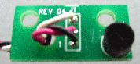
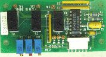
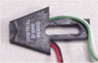
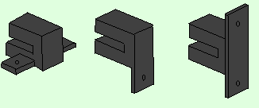

Sensors Theory of Operation
This document provides operational details for the sensors used in the Access instrument.
Sensor Types
Four types of sensors are used on Access instruments.
Logic 1 Sensors: This sensor uses a solid disk or wheel which is positioned so that it normally blocks the light between the source and receiver. At strategic locations, slots or windows are cut into the wheel. As these windows pass through the sensor, light is reaches the receiver causing its output to switch to a logic 1.
Logic 0 Sensors: This sensor is normally open (not blocked) with an output logic of 1. The triggering device is an optically solid flag, which when passed through the sensor blocks the received light and causes the sensor output to drop to a logic 0.
Hall Effect Sensors: A Hall Effect sensor is a solid-state device whose output changes when it is exposed to a magnetic field.
Field Sensors: This type of sensor contains a source and receiver on the same plane. The source emits a light signal which reflects off a surface within its field. A receiver detects the reflected signal. This type of sensor can require a sensitivity or gain adjustment.
| Logic 1 Sensors (7) | Logic 0 Sensors (9) | Hall Effect Sensors (2) | Field Sensors (3) |
|---|---|---|---|
|
|
|
RV Sensors
 Cup/Tube Reader  Waste Bag Sensor  |
Sensor Housings
Three types of housings are used for mounting the logic 1 and 0 sensors.
- The components inside the sensors are interchangeable between the different housing types.
- The incubator belt index sensor has a special narrow window in the housing.

| Pin | Color | Function |
|---|---|---|
| 1 | White | 5 V DC |
| 2 | Green | GND |
| 3 | Blue | OUT (TP = 0.7 V flag in sensor, 4.8 V flag open, or sensor disconnected) |
| 4 | Red | 5 V DC |
| 5 | Black | GND |